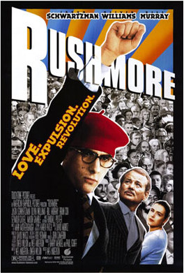

Wes Anderson
1998
93 minutes
TITLE: Rushmore TEXT PLACEHOLDER 186
This is another Wes Anderson film it took you ages to watch because the trailer was so misleading. The trailer makes this look like a madcap romp which consists of nothing but Bill Murray and Jason Schwartzman giddily playing stupid pranks on each other while everyone prances around in next year's Halloween costumes at the hipster bar. This made the film look so glowingly radioactive to you at the time it came out that you were still afraid to touch it a decade or two later. As it turns out...it's pretty good and actually has a lot of hilariously witty and stupid gags in it. The Serpico play-within-a-movie part is particularly funny, for example.
A few people you were friendly with in grad school at UW were part of a campus organization that was notorious for pulling pranks. You mostly kept your hands clean from this since as time went on the pranks were getting more and more unhinged and seemed likely to get someone into serious trouble or even cause an international incident--the less said the better. Your roommate was slightly more involved with some of their hijinks, but never fully party to their craziest stuff. The organization's most notorious prank was one night after a heavy snow storm they assembled all hands on deck and built an enormous Snow Phallus several feet high on the hill outside the campus administration building. This has been repeated several times in campus history, but as far as you know never quite on the scale of their magnum opus.
The head of the organization also ran for coroner in the city of Madison, which was, bizarrely, an elected position and partisan and usually unopposed. He gathered enough signatures to run on the ballot as a Republican, which the local party (what little there was of it) was not willing or able to prevent. He then aggressively put up posters all over the city announcing his candidacy for the office. The posters featured a picture of him in a mad scientist lab coat with a trickle of blood dripping out of his mouth, and his platform included such items as hosting guided tours of the city morgue for local elementary school students so they could look at cadavers up close. He got an impressive ten percent of the vote, mostly from the city's few Republican residents voting straight-ticket.
You remember this guy having several beefs with some of the more sincere campus activists, including one very active and vocal one who was particularly aggressive about getting his name out there while advocating for causes he believed in. For all his own attention-grabbing antics, he was alarmingly cynical about the motives of other people with seemingly good intentions, whom he accused of being attention hogs and protest martyrs. You were quite surprised after he graduated that he himself ended up becoming a relatively respected journalist and peace activist before dying a mysterious untimely death a few years ago.
Time to choose something different: